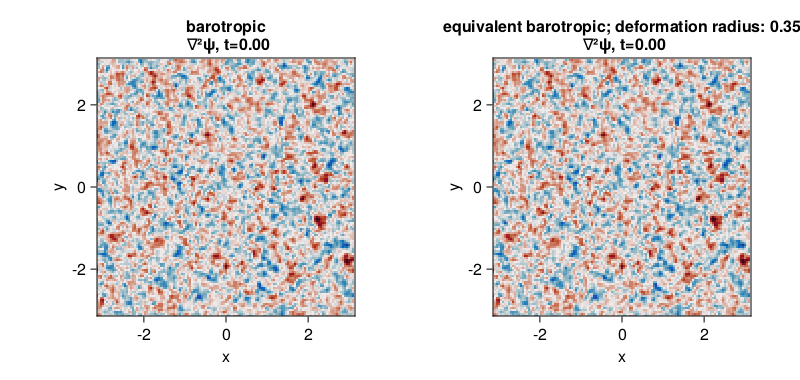

SingleLayerQG decaying 2D turbulence with and without finite Rossby radius of deformation
We use here the SingleLayerQG module to simulate decaying two-dimensional turbulence and investigate how does a finite Rossby radius of deformation affects its evolution.
Install dependencies
First let's make sure we have all required packages installed.
using Pkg
pkg"add GeophysicalFlows, Printf, Random, CairoMakie"Let's begin
Let's load GeophysicalFlows.jl and some other packages we need.
using GeophysicalFlows, Printf, Random, CairoMakie
using GeophysicalFlows: peakedisotropicspectrum
using LinearAlgebra: ldiv!
using Random: seed!Choosing a device: CPU or GPU
dev = CPU() # Device (CPU/GPU)Numerical, domain, and simulation parameters
First, we pick some numerical and physical parameters for our model.
n, L = 128, 2π # grid resolution and domain length
deformation_radius = 0.35 # the deformation radius
# Then we pick the time-stepper parameters
dt = 1e-2 # timestep
nsteps = 4000 # total number of steps
nsubs = 20 # number of steps between each plotProblem setup
We initialize two problems by providing a set of keyword arguments to the Problem constructor. The two problems are otherwise the same, except one has an infinite deformation radius, prob_bqg, and the other has finite deformation radius, prob_eqbqg.
For both problems we use stepper = "FilteredRK4". Filtered timesteppers apply a wavenumber-filter at every time-step that removes enstrophy at high wavenumbers and, thereby, stabilize the problem, despite that we use the default viscosity coefficient ν=0. Thus, we choose not to do any dealiasing by providing aliased_fraction=0.
stepper="FilteredRK4"
prob_bqg = SingleLayerQG.Problem(dev; nx=n, Lx=L, dt, stepper, aliased_fraction=0)
prob_eqbqg = SingleLayerQG.Problem(dev; nx=n, Lx=L, deformation_radius, dt, stepper, aliased_fraction=0)Setting initial conditions
For initial condition we construct a relative vorticity with energy most energy around total wavenumber $k_0$.
seed!(1234)
k₀, E₀ = 6, 0.5
∇²ψ₀ = peakedisotropicspectrum(prob_bqg.grid, k₀, E₀, mask=prob_bqg.timestepper.filter)SingleLayerQG allows us to set up the initial $q$ for each problem via set_q!() function. To initialize both prob_bqg and prob_eqbqg with the same flow, we first use function SingleLayerQG.streamfunctionfrompv! to get the streamfunction that corresponds to the relative vorticity we computed above. This works in the purely barotropic problem, prob_bqg since in that case the QGPV is simply the relative vorticity.
∇²ψ₀h = rfft(∇²ψ₀)
ψ₀h = @. 0 * ∇²ψ₀h
SingleLayerQG.streamfunctionfrompv!(ψ₀h, ∇²ψ₀h, prob_bqg.params, prob_bqg.grid)and then use the streamfunction to compute the corresponding $q_0$ for each problem,
q₀_bqg = irfft(-prob_bqg.grid.Krsq .* ψ₀h, prob_bqg.grid.nx)
q₀_eqbqg = irfft(-(prob_eqbqg.grid.Krsq .+ 1/prob_eqbqg.params.deformation_radius^2) .* ψ₀h, prob_bqg.grid.nx)Now we can initialize our problems with the same flow.
SingleLayerQG.set_q!(prob_bqg, q₀_bqg)
SingleLayerQG.set_q!(prob_eqbqg, q₀_eqbqg)Let's plot the initial vorticity field for each problem. Note that when plotting, we decorate the variable to be plotted with Array() to make sure it is brought back on the CPU when vars live on the GPU.
function relativevorticity(prob)
vars, grid = prob.vars, prob.grid
ldiv!(vars.q, grid.rfftplan, - grid.Krsq .* vars.ψh)
return vars.q
end
x, y = prob_bqg.grid.x, prob_bqg.grid.y
Lx, Ly = prob_bqg.grid.Lx, prob_bqg.grid.Ly
fig = Figure(resolution=(800, 380))
axis_kwargs = (xlabel = "x",
ylabel = "y",
aspect = 1,
limits = ((-Lx/2, Lx/2), (-Ly/2, Ly/2)))
t_bqg = Observable(prob_bqg.clock.t)
t_eqbqg = Observable(prob_eqbqg.clock.t)
title_bqg = @lift "barotropic\n ∇²ψ, t=" * @sprintf("%.2f", $t_bqg)
title_eqbqg = @lift "equivalent barotropic; deformation radius: " * @sprintf("%.2f", prob_eqbqg.params.deformation_radius) * "\n ∇²ψ, t=" * @sprintf("%.2f", $t_eqbqg)
ax1 = Axis(fig[1, 1]; title = title_bqg, axis_kwargs...)
ax2 = Axis(fig[1, 2]; title = title_eqbqg, axis_kwargs...)
ζ_bqg = Observable(Array(relativevorticity(prob_bqg)))
ζ_eqbqg = Observable(Array(relativevorticity(prob_eqbqg)))
heatmap!(ax1, x, y, ζ_bqg;
colormap = :balance, colorrange = (-40, 40))
heatmap!(ax2, x, y, ζ_eqbqg;
colormap = :balance, colorrange = (-40, 40))
fig
Time-stepping the Problem forward
Now we time-step both problems forward and animate the relative vorticity in each case.
startwalltime = time()
cfl(prob) = prob.clock.dt * maximum([maximum(prob.vars.u) / prob.grid.dx, maximum(prob.vars.v) / prob.grid.dy])
record(fig, "singlelayerqg_barotropic_equivalentbarotropic.mp4", 0:Int(nsteps/nsubs), framerate = 18) do j
if j % (1000 / nsubs) == 0
log_bqg = @sprintf("barotropic; step: %04d, t: %d, cfl: %.2f, walltime: %.2f min",
prob_bqg.clock.step, prob_bqg.clock.t, cfl(prob_bqg), (time()-startwalltime)/60)
println(log_bqg)
log_eqbqg = @sprintf("equivalent barotropic; step: %04d, t: %d, cfl: %.2f, walltime: %.2f min",
prob_eqbqg.clock.step, prob_eqbqg.clock.t, cfl(prob_eqbqg), (time()-startwalltime)/60)
println(log_eqbqg)
end
stepforward!(prob_bqg, nsubs)
SingleLayerQG.updatevars!(prob_bqg)
stepforward!(prob_eqbqg, nsubs)
SingleLayerQG.updatevars!(prob_eqbqg)
t_bqg[] = prob_bqg.clock.t
t_eqbqg[] = prob_eqbqg.clock.t
ζ_bqg[] = relativevorticity(prob_bqg)
ζ_eqbqg[] = relativevorticity(prob_eqbqg)
endbarotropic; step: 0000, t: 0, cfl: 0.53, walltime: 0.00 min
equivalent barotropic; step: 0000, t: 0, cfl: 0.53, walltime: 0.00 min
barotropic; step: 1000, t: 10, cfl: 0.46, walltime: 0.07 min
equivalent barotropic; step: 1000, t: 10, cfl: 0.47, walltime: 0.07 min
barotropic; step: 2000, t: 20, cfl: 0.48, walltime: 0.14 min
equivalent barotropic; step: 2000, t: 20, cfl: 0.36, walltime: 0.14 min
barotropic; step: 3000, t: 30, cfl: 0.47, walltime: 0.20 min
equivalent barotropic; step: 3000, t: 30, cfl: 0.35, walltime: 0.20 min
barotropic; step: 4000, t: 40, cfl: 0.57, walltime: 0.27 min
equivalent barotropic; step: 4000, t: 40, cfl: 0.36, walltime: 0.27 min
This page was generated using Literate.jl.